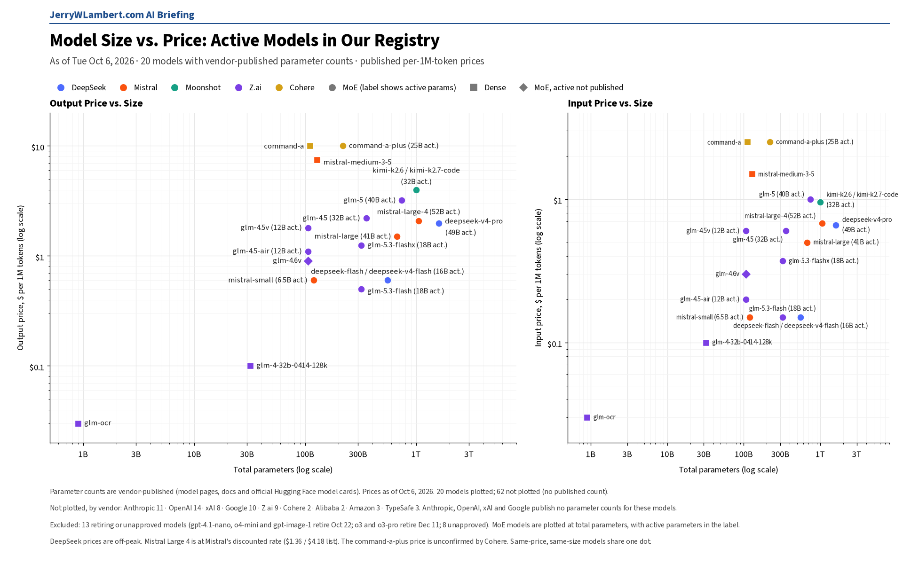
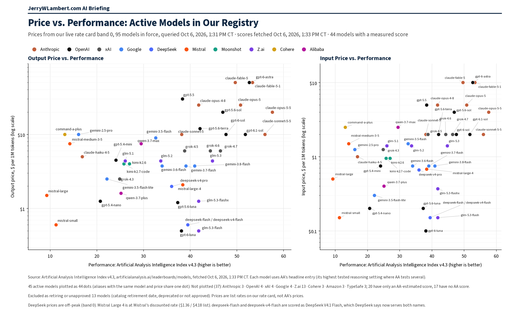

Daily Model Brief, October 6, 2026
Mistral Large 4 lands at a discount. Three OpenAI models retire October 22.
Download PDFExecutive Summary
Mistral Large 4 (mistral-large-4) is live in Public Preview at Mistral's discounted rate of $0.68 input, $0.07 cached and $2.09 output per million tokens (list $1.36 / $0.14 / $4.18), with a 1M-token context window. The existing mistral-large line stays on Large 3 at $0.50 / $1.50.
OpenAI will shut down gpt-4.1-nano, o4-mini and gpt-image-1 on Thursday, October 22, 2026 at 7:00 PM CT (OpenAI lists October 23 with no time).
Google released Nano Banana 2.1 (gemini-nano-banana-2.1), set an October 29 shutdown for gemini-3.1-flash-image and set November 17 shutdowns for five preview audio models. Perplexity listed a second Decisions API model, and Alibaba posted a US (Virginia) price row for qwen3.8-flash.
No published price changed on the established production models tracked in this brief.
What This Means for Customers
- If you adopt Mistral Large 4, budget the sale price and plan for a return to list. Mistral prints no end date on the discount, and list is double the sale rate.
- Do not confuse Large 4 with the existing
mistral-largeline. That line still bills at Large 3 prices. - Work still on
gpt-4.1-nano,o4-miniorgpt-image-1needs a migration plan before the evening of October 22 (CT). Move to the named successors, not a silent remap. - Nano Banana 2.1 is an image model. Image output at $30.00 per million tokens works out to about $0.0336 per 1K image, $0.0504 per 2K image and $0.0756 per 4K image. Batch is half price. Treat it as a new image product, not a chat substitute.
- Perplexity's Fast Search option for
web_searchis $0.001 per call beside the standard $0.0025. That is a per-call tool fee, not a token rate, so token-only dashboards will understate search-heavy agents. - Spread workloads across vendors and tiers so one retirement week (OpenAI October 22, Google image October 29, Google audio November 17) cannot hit every use case at once.
New Models and Price Changes
Prices in USD per 1M tokens.
| Vendor | Model ID | Status | Input | Cached | Output |
|---|---|---|---|---|---|
| Mistral | mistral-large-4 | Public Preview, released Oct 6. 1M-token context. | $0.68 (list $1.36) | $0.07 (list $0.14) | $2.09 (list $4.18) |
| gemini-nano-banana-2.1 | Generally available, released Oct 6. Image model. | $1.50 | Not listed | $7.50 text $30.00 image | |
| Perplexity | pplx-decider-v1.1-27b | Decisions API model, new on the pricing page. | $0.04 | Not listed | Free |
| Alibaba | qwen3.8-flash (US, Virginia) | New regional price row posted Oct 6. | $0.15 | Not listed | $0.47 |
- Mistral shows the Large 4 rates as a sale price against the list price, with no end date. Mistral Large 3 stays at $0.50 input and $1.50 output.
- Nano Banana 2.1 batch rates are half the standard rates.
- Anthropic, OpenAI, xAI, DeepSeek, Moonshot, Z.ai, MiniMax, Meta and TypeSafe pricing, model and deprecation pages were unchanged since the morning check.
Deprecations and Retirements
| Vendor | Model ID | Shutdown (CT) | Replacement | Note |
|---|---|---|---|---|
| OpenAI | gpt-4.1-nano o4-mini gpt-image-1 | Thu Oct 22, 2026, 7:00 PM CT | gpt-5.6-luna gpt-5.6-terra gpt-image-2.5-sunburst or gpt-image-2.5-flare | OpenAI lists Oct 23 with no time; 7:00 PM CT Oct 22 is 00:00 UTC Oct 23. |
| gemini-omni-flash-preview | Thu Oct 22, 2026 (time not stated) | gemini-omni-1.1-flash | Newly listed today. | |
| veo-3.1-generate-preview veo-3.1-fast-generate-preview veo-3.1-lite-generate-preview | Thu Oct 22, 2026 (time not stated) | gemini-omni-1.1-flash | Unchanged since the morning check. | |
| gemini-3.1-flash-image | Thu Oct 29, 2026 (time not stated) | gemini-nano-banana-2.1 | New today. | |
| gemini-3.1-flash-tts-preview gemini-2.5-flash-preview-tts gemini-2.5-pro-preview-tts | Tue Nov 17, 2026 (time not stated) | gemini-3.8-flash-tts or gemini-3.8-flash-lite-tts | New today. Previously no shutdown date. | |
| gemini-3.1-flash-live-preview gemini-2.5-flash-native-audio-preview-12-2025 | Tue Nov 17, 2026 (time not stated) | gemini-3.8-live | New today. Previously no shutdown date. | |
| Anthropic | claude-sonnet-4-5-20250929 | Mon Nov 30, 2026 (time not stated) | claude-sonnet-5-5 | Unchanged. |
| Anthropic | claude-haiku-4-5-20251001 | Not sooner than Thu Oct 15, 2026; no date set | None named | Watch item. Active today. |
- Unverified: Google's deprecations page now shows gemini-2.5-flash-image shutting down Mon Mar 15, 2027, with gemini-3.1-flash-lite-image as the replacement, while Google's pricing page still says it shut down Oct 2, 2026. Confirm with Google before you budget either date.
- Perplexity will retire its Agent API and Router API routes to older OpenAI models (openai/gpt-5.4, gpt-5.4-mini, gpt-5.4-nano, gpt-5.2, gpt-5.1, gpt-5 and gpt-5-mini) at 7:00 PM CT on Fri Oct 23, 2026.
Around the Market
The day's first-party move is Mistral putting Large 4 on its pricing page at a clear sale against list, with no end date printed. That is a new model, not a rename of Large 3. OpenAI's October 22 clock for three models is the hard calendar item for anyone still on gpt-4.1-nano, o4-mini or gpt-image-1. Google's update adds an image successor in Nano Banana 2.1 and fills in shutdown dates for image and audio previews that previously had none. Perplexity's Decisions line and Fast Search tool fee are product-shape news more than a frontier price change, and Alibaba's US Virginia row for qwen3.8-flash is a regional posting. Anthropic, xAI, DeepSeek, Moonshot, Z.ai, MiniMax, Meta and TypeSafe left published rates alone.
Bottom Line
Adopt Large 4 only if you want that class and can absorb a return to list. Drain gpt-4.1-nano, o4-mini and gpt-image-1 paths before the evening of October 22 (CT). Treat Nano Banana 2.1 as a new image product with its own cost shape, and keep Large 3 and Large 4 on separate cost lines.
Model Size vs. Price

Across the 20 active models whose vendors publish parameter counts, price tracks active parameters far more closely than total size. Mistral Large 4 (1.05T total, 52B active) sits mid-pack at $0.68 input and $2.09 output per 1M tokens.
Price vs. Performance

Across the 45 active models with a measured Artificial Analysis Intelligence Index v4.3 score (fetched Oct 6, 2026, 1:33 PM CT), price rises with performance only loosely (rank correlation 0.45 on output price). Several models scoring near 40 cost $0.60 or less per 1M output tokens, including GLM-5.3-Flash, GPT-6 Luna and DeepSeek V4.1 Flash, while the top scorer, Claude Opus 5.5 at 57.6, costs $20.
All times Central. Prices, dates and model IDs are taken from first-party vendor pricing, model and deprecation pages as of 1:00 PM CT on October 6, 2026; performance scores are from the Artificial Analysis Intelligence Index v4.3. Items that could not be confirmed are marked unverified.